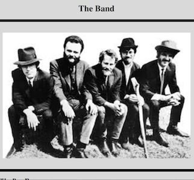
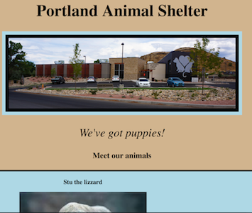

Created a website with Brooke about a vacation to Iceland using HTML and CSS with Bootstrap. We used responsive columns, gyphicons, a sliding carousel and jumbotron, and a fixed navigation bars with a dropdown menu. We also made the site elements change with screen size. This was our first project using Bootstrap!

Created a website with Simon Temple about his favorite band using basic HTML and CSS. In this project, we learned how to create sidebars and columns for the first time, and learned how to add styling to each item.

Created another website with Simon about an animal shelter using basic HTML and CSS. This was our first attempt at using responsive columns and images.